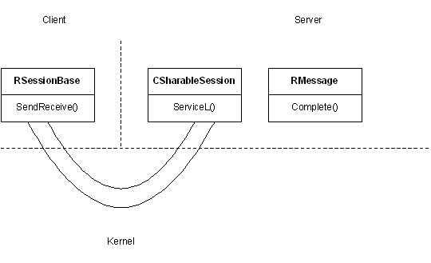

|
| |
Communication between client and server is represented by a session; this is initiated by the client. A client thread may have several sessions with a server. A session can also be shared by all the client threads in a process.
Sessions are maintained by the Kernel and the important points are:
The client has an RSessionBase handle to the
session.
The server uses a CSharableSession-derived class to
represent the session.
A session may be sharable between the threads in the client process or it can be restricted to the thread connecting to the server.
If a call to the client interface requires a service from the server, the client interface must set up and send a message. The message has a 32-bit operation code to identify the request, and up to four 32-bit parameters. The process can be summarised as follows:
The client sends the message to the server using
RSessionBase::SendReceive(). This call eventually returns with the
completion code.
The Kernel packages the operation code and parameters and
delivers an RMessage to the server.
The server delivers the message to the appropriate
CSharableSession object, which implements the request. When the
server has finished, it uses RMessage::Complete() to indicate that
the service has been performed and to return a 32-bit result to the
client — this is returned from the
SendReceive().
The following diagram illustrates this:

A server can support multiple connections from a client in a number of distinct ways:
The client may have a number of concurrent sessions with a particular server.
Each session is independent of any other within the client
thread; Connect() must be called to initialise each new
connection.
The client may create a number of subsessions within a single session.
Each client subsession corresponds to a subsession object in the server. The client subsession contains a handle to this subsession object. All communication is via the owning session; the handle is used to match up corresponding client subsessions and subsession objects.
Subsessions use fewer Kernel resources than sessions, although they are slightly more complex to use.
A server can support the creation of sharable sessions allowing all the threads in a client process to share a single session. The important points are:
The server must support the sharing of sessions.
The connecting thread can make the session sharable among all threads in the client process.
Client threads can make an explicit request to attach to the session or they can be automatically attached. Auto attachment is aimed at processes like Java. Attaching ensures that Kernel resources are allocated to allow a thread to start sending messages to the server.
Up to 255 threads can be concurrently attached to a session.
Note that in ER5:
There is no concept of a sharable session and the class
CSharableSession is not defined. A session can only be used by the
connecting thread.
The server uses a CSession-derived class to
represent the session.
Copyright ©2002 Symbian Ltd. 6.1-00174 |
|